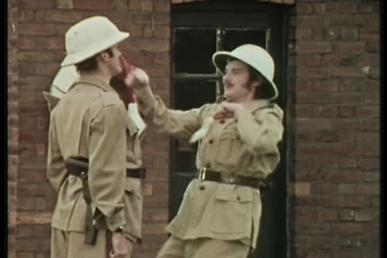

Description
Herrings are a small, schooling fish have been a staple food for humanity for millennia. They are great for your health, being full of omega-3 fatty acids, calcium and vitamin B12, but they are also great for an ego boost. You are sure to feel like Godzilla while munching on these tasty little morsels.
This simple yet tasty recipe brings out the best of these tiny, tasty Clupeidae. It is sure to become one of your family’s favourites. Furthermore, it should serve as a helpful tool should you ever find yourself in the woods needing to cut down a tree at the request of a clan of unwonted knights.
Ingredients
- 2 x large herrings (fresh optional)
- 2x pith helmets
- 2x sets of khaki clothing
- A willing partner, approximately your height
Steps
- Dress yourself and your willing partner in the khaki clothing.
- Put the pith helmets on both you and your partner.
- Pick herring up in both hands.
- Facing your partner, take two strides backwards away from them.
- Lift arms perpendicular to your torso, level with your partner's face. Each herring should be hanging parallel to your body.
- Separate arms by about 40º (30º if using fan-forced arms). n.b. your hands must be separated at least enough to allow your partner's head to pass between them.
- Dance backwards and forwards on tiptoes, bringing hands together when your partner's face is in between them, allowing herring to contact their cheeks. The contact force should be just enough to cause minor annoyance and a soft "slap" noise.
- Repeat steps 6-7 until asked to stop or slapped with a bigger fish
- Enjoy.
